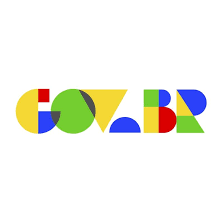

Notícias das últimas semanas
Jojo todynho
Nesta sexta-feira (23), em seu perfil no Instagram, a cantora confirmou que havia colocado um ponto final no romance. Os dois estavam juntos desde junho de 2023. “Vocês já sabem que estou em outra fase da minha vida, eu mudei.
P.Daddy
O rapper, que também é conhecido como Puff Daddy, foi preso no dia 16 de setembro sob a suspeita de tráfico sexual e agressão. O artista é acusado de abuso sexual e de drogar pessoas durante festas promovidas por ele.
Ryan e Giovanna
Veio à tona na sexta-feira (27/9),
através do portal LeoDias,a divulgação das imagens de Mc ryan agredindo Giovanna mãe de seu filho sob desculssão.Logo em seguida a vítima da agressão se pronunciou defendendo o agressor justificando que ela seria total culpad do comportamento agressivo do marido

Corinthias
x
Internacional
Neste Sábado (05/10),
Ocorreu a despulta corinthias x Inter,Yuri Alberto marcou dois gols do Corinthias contra Inter, Bernabei do time Ineter fez 1 gol aos 15 minutos do primeiro tempo e Ricardo Mathias aos 48 minutos do segundo tempo,fazendo assim empate dos dois times.

Eleições 2024
Neste domingo (06/10),
Na cidade de Cotia-sp ocorreu por volta das 21h os votos apurados a candidatos á Vereador e Prefeito, sendo assim na soma dos votos ganhou Welington Formiga como prefeito da cidade e como vereador Rafael Santos.
cmsp
Relatos de alunos.
Centenas de alunos estaduais reclamam sobre o caimento e desenvolvimento nas plataformas digitas dadas pelo governo, diariamente são assuntos novos abordados que mal são explicados e ja passados para o proximo sendo assim afetando os alunos.